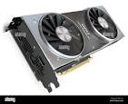

CPU Components
| Sr No. |
Name |
Image |
Description |
| 1. |
Motherboard |
|
The main circuit board that connects all the internal components |
| 2. |
Power supply
|
|
Converts alternating current (AC) from a wall outlet into direct current (DC) for the computer's
components |
| 3. |
Hard drive
|
 |
Stores files, programs, and other information using magnetically coated discs |
| 4. |
Random Access Memory (RAM)
|
|
The computer's short-term memory that stores data temporarily |
| 5. |
Sound Card |
|
Sound cards use a digital-to-analog converter (DAC), which converts recorded or generated digital signal
data into an analog format. |
| 6. |
Graphics processing unit (GPU)
|
 |
Handles graphical operations and advanced imagery |
| 7. |
Control Unit (CU) |
|
Manages the CPU's operations |
| 8. |
Universal Serial Bus(USB) |
 |
It is a technology that allows you to connect devices to your computer. |
| 9. |
Cooling fan |
|
A cooling fan is any fan inside, or attached to, a computer case used for active cooling. |
| 10. |
Buses |
|
Channels for data transfer between components |
| 11. |
Registers
|
|
Fast storage locations for temporary data |
| 12. |
Cache Memory
|
|
High-speed access to frequently used data |
| 13. |
Case |
|
A computer case, also known as a chassis, is the outer shell that houses the internal components of a computer. It protects the computer from damage and keeps dust out. |
| 14. |
Ethernet card |
|
An Ethernet card, also known as a network interface card (NIC), allows a computer to connect to a network using an Ethernet cable. |
| 15. |
Joystick |
|
A Optical Drive is a type of internal computer hardware that allows users to read from and write data to optical discs such as CDs, DVDs, and Blu-ray discs. |